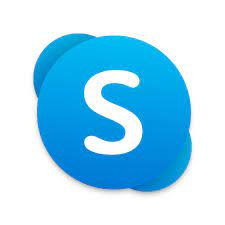

Platformy e-learningowe
Platforma e-learningowa to aplikacja umożliwiająca naukę na odległość w trybie rzeczywistym. Wyróżniamy takie platformy jak: Microsoft Teams, Zoom, Skype czy Google Meet.
Microsoft Teams – usługa internetowa oparta na chmurze zawierająca zestaw narzędzi i usług służących współpracy zespołowej. Usługa łączy funkcjonalność z innymi produktami Microsoftu.

Zoom – oprogramowanie do wideokonferencji opracowane przez Zoom Technologies z San Jose.

Skype – komunikator internetowy firmy Microsoft, oparty na technologii przetwarzania danych w chmurze

Google Meet to usługa komunikacji wideo opracowana przez Google. Jest to jedna z dwóch aplikacji zastępujących Google Hangouts, druga to Google Chat.